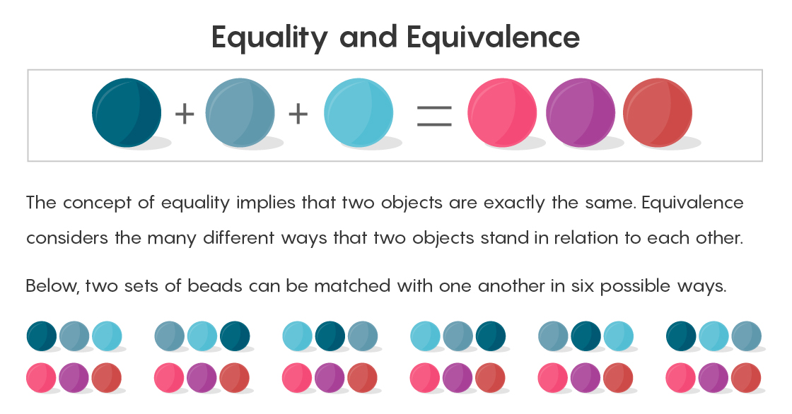
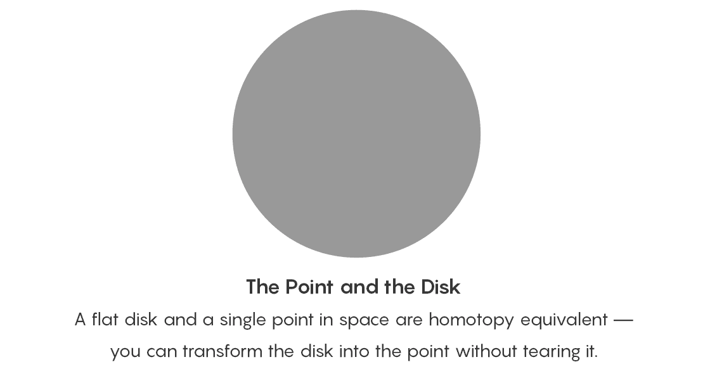
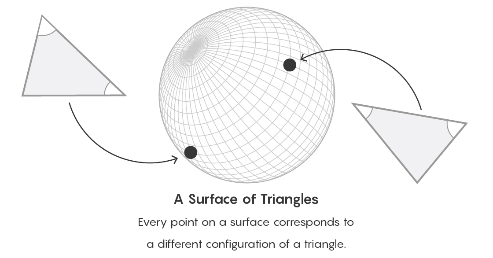
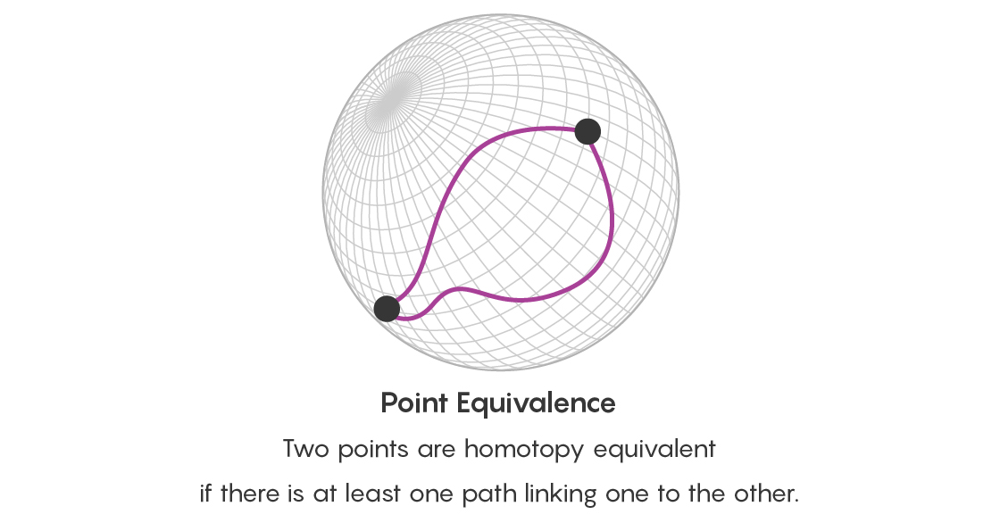
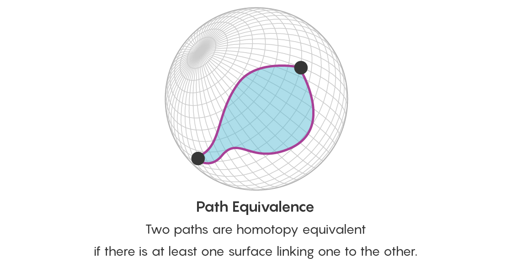
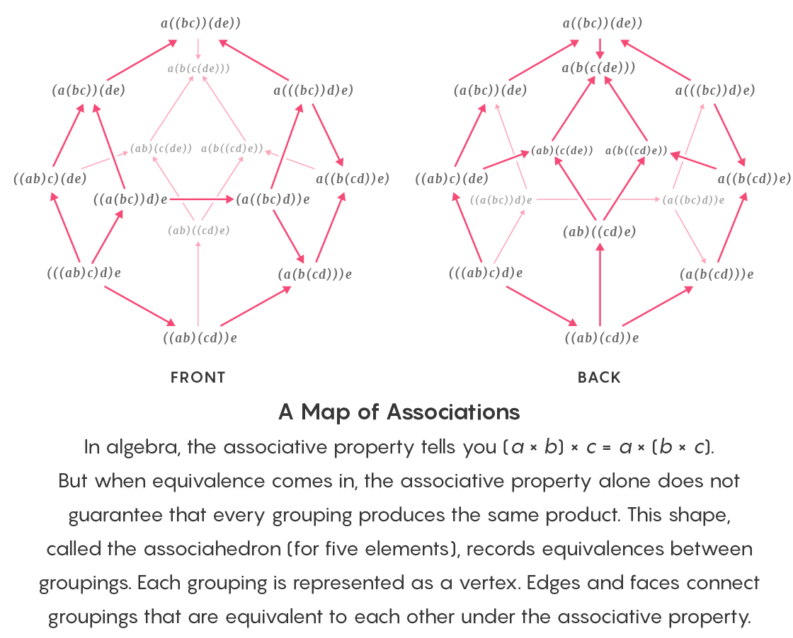

With Category Theory, Mathematics Escapes From Equality
两个具有纪念意义的著作使许多数学家可以规避等号。他们的目标是：在松散的“等价”关系上重建学科的基础。这一过程并非总是顺利进行。
等号是数学的基石。它给出了一个非常基础且毫无争议的声明：一些东西是完全相同的。
但是，越来越多的数学家认识到等号是数学的一个原始的错误。他们认为它隐藏了数量相关的的重要的复杂性，这些复杂性可能为解决大量问题提供了解决方案。他们想用一种包含更宽松的等价定义的语言来重新表述数学。
这个社区中最杰出的人物是Jacob Lurie。今年7月，41岁的Lurie放弃他在哈佛大学的终身职位，前往新泽西州的普林斯顿高级研究所担任教职。世界上许多最受尊敬的数学家都曾在这里工作。
Lurie的想法正在席卷各个领域，这非常罕见。通过几本数千页的著作，他通过发展等号，构造了一种截然不同的方式来理解数学中一些最基本的概念。“我认为他觉得这是思考数学的正确方法。”哈佛大学数学家迈克尔·霍普金斯说。
Lurie于2009年出版了他的第一本书《 High Topos Theory》。这本944页的著作介绍了如何使用infinity categories这一新的语言来解释已有的数学领域。此后几年，Lurie的想法被应用到越来越多的数学领域。许多数学家认为它对于该领域的未来是必不可少的。西北大学的John Francis说：“一旦他们学习了infinity categories，就再也回不去了。”
然而，infinity categories的传播也揭示了一些问题。在诸如数学之类的古老领域，尝试吸收一个大的新思想，特别是挑战其最重要概念含义的时候，要经历非常的痛苦。爱丁堡大学的Clark Barwick说：“数学界有一定程度的保守性。如果没有令人信服的理由，你不能指望任何数学家都能从任何地方迅速接受一个新的工具。”
尽管许多数学家已经采用了infinity categories，但很少有人完整阅读过Lurie冗长而高度抽象的文章。结果就是一些基于他的想法的工作不够严格。
康奈尔大学的数学家Inna Zakharevich说：“我听到有人说，‘它（某个结论）在Lurie著作的某个地方。’然后我说，‘真的吗？你引用的是8,000页的文章。’这不是引用，而是对权威的盲从。”
数学家们仍在努力应对Lurie想法的规模及其独特的引入方式。他们正在提炼和重新包装他对infinity categories的描述，以使更多的数学家可以使用它们。从某种意义上说，他们正在执行一些变革之后的必须的梳理工作，将变革性内容变得日常。通过这样做，他们正在以等价而不是相等来建立数学的未来基础。
Infinite Towers of Equivalence
数学上的相等概念几乎没什么争议。 2个小球加1个小球等于3个小球。这还有什么可说的？但是，最简单的概念可能最危险。
自19世纪末以来，数学的基础是从被称为集合的一些对象的集合中建立的。集合论规定了用于构造和操纵这些集合的规则或公理。例如，其中一个公理是，你可以将具有两个元素的集合添加到具有一个元素的集合中，以生成具有三个元素的新集合：2 +1 = 3。
在形式化层面，证明两个数量相等的方法是将它们配对：将等号右侧的一个球与左侧的一个球配对，所有配对完成后，没有剩余的珠子。
集合论认识到两个集合各有三个对象，恰好能完成配对。但是要看出所有不同的配对方法并不容易。你可以将右侧的第一个球与左侧的第一个球配对，或者将右侧的第一个球与左侧的第二个球配对，依此类推（共有六种配对方法）。如果仅仅说2加1等于3，其实是忽略了使它们相等的不同的配对方法。

这个例子很好的体现出等价的概念。相等关系非常严格，两个东西要么相等要么不相等。但等价关系非常不一样。
定义等价的一种形式就是将一个集合中的每个元素与另一个集合中的元素一一匹配。但是在被称为同伦理论的数学领域中，如果你可以将一个几何图形（或几何空间）拉伸或压缩成另一个几何图形而不必切割或撕裂，则这两个几何图形（或几何空间）是等价的。
从同伦理论的角度来看，平面圆盘和空间中的单个点是等价的。你可以将圆盘压缩到该点。但是，不能将圆盘中的点与该点配对，因为圆盘中有无数个点，而该点只是一个点。

自20世纪中叶以来，数学家一直在寻找集合论的替代理论，在该理论中，可以更自然的处理等价。1945年，数学家Samuel Eilenberg和Saunders Mac Lane创建了范畴论。
范畴可以包含任何你想要的东西。你可以创建一个哺乳动物的范畴，里面包含全世界所有的有毛，温血和哺乳的动物。也可以是一个数学对象的范畴，集合，几何空间或数系都没问题。
一个范畴是一个集合，以及任意两个对象之间的关系。这些关系涵盖了使两个对象等效的所有的方式。你也可以将范畴视为几何图形，其中每个元素由一个点表示。
比如地球仪的表面，想象一下该表面上的每个点都代表着不同的三角形。这些点之间的路径将表示对象之间的等价关系。从范畴论的角度来看，你要忽略描述一个对象的显式方式，而将注意力集中在一个对象跟其他对象的关系上。

Zakharevich说：“有很多被我们当成事物的东西，其实它们都表示事物之间的关系。比如‘我的丈夫’，我们可以把它视为一个事物，也可以将它视为一种与我的关系。他的某些部分是由他与我的关系决定的。”
Eilenberg和Mac Lane的范畴论非常适合用来描述等价关系。但是在20世纪下半叶，数学家越来越多地根据同伦等较弱的等价概念。约翰·霍普金斯大学数学家Emily Riehl说：“随着数学变得越来越精妙，我们不可避免地会朝着这些更精妙的等价观念发展。”在这些精妙的等价概念中，有关两个对象的关系的信息量急剧增加。Eilenberg和Mac Lane的朴素的范畴论并非旨在解决这一问题。
要了解信息量如何增加，请首先回忆代表许多三角形的球面。如果可以将两个三角形中的一个经过拉伸或变形为另一个，则两个三角形是同伦等价的。如果存在一条将彼此连接的路径，则表面上的两个点是同伦等价的。通过研究表面上两个点之间的路径，你实际上正在研究这些点代表的三角形之间的关系。

两点之间会有多条路径，你还要考虑所有这些路径之间的等价性。因此，除了询问两个点是否相等之外，你现在还要询问在同一对点处开始和结束的两条路径是否等价。在这些路径之间是否存在一条路径。路径之间的路径是边界为两个路径的一个片状区域。

你可以继续进行下去。如果两个片状区域之间有一条路径，则它们是等价的。该路径将会是三维物体的形式。这些三维对象本身又可以通过四维路径连接（两个对象之间的路径始终比对象本身多一维）。
最终，你将在等价之间建立一个无限层的等价关系塔。通过整个建筑，你可以对选择的任意对象（表示为球面上的一个点）生成一个完整的透视图。
“这只是一个球面，但事实证明，要理解一个球面的形状，从某种意义上讲你需要到无限远，”德克萨斯大学奥斯汀分校的David Ben-Zvi说。
在20世纪的最后几十年中，许多数学家研究了“infinity categories”的理论，可以追踪无限层的等价关系。有几个取得了一些实质性进展，但只有一个一路走了下来。
Rewriting Mathematics
Jacob Lurie关于infinity categories理论的第一篇论文比较不幸。2003年6月5日，25岁的他在科学预印本网站arxiv.org上发布了长达60页的名为“ On Infinity Topoi”的论文。他从这时开始起草规则，让数学家可以使用这些规则来处理infinity categories。
第一篇论文并没有得到广泛的好评。读完之后不久，芝加哥大学的数学家Peter May给Lurie的研究生顾问Michael Hopkins发送电子邮件，说Lurie的论文有一些有趣的想法，但感觉很粗糙不够严谨。
May说：“我向Michael解释了我们的保留意见，Michael传达给了Jacob。”
不清楚Lurie是否将May的电子邮件视为挑战，还是早有计划。Lurie多次拒绝就此故事接受采访。很明显的一点是，Lurie在受到批评后，进入了持续多年的高产期，这已成为传奇。
May说：“我不在Jacob的大脑里，我无法确切地说出他当时在想什么。” “但可以肯定的是，我们所反馈的草案与最终版本之间经过了大的修改，在数学层面上也是。”
2006年，Lurie在arxiv.org上发布了“Higher Topos Theory”。在这项艰巨的工作中，他创造了用新的数学基础（以infinity categories为基础）取代集合论所需的机制。在infinity categories领域作出重要早期工作的伊利诺伊大学香槟分校的数学家Charles Rezk说：“他用数千页的著作创造了我们目前正在使用的这种基础设施，我一辈子都无法想象他仅用两三年就写出Higher Topos Theory。”
然后在2011年，Lurie花了更长的时间完成了后续的一项工作，他重塑了代数。
代数提供了一套精美的形式规则来操作方程。数学家一直使用这些规则来证明新定理。但是代数就像在等号做的单杠上进行的体操。如果你想将其替换为更加精妙的等价概念，则某些操作会变得更加困难。
比如孩子在学校学习的第一个代数规则：结合律。即三个或更多数字的和或乘积，跟数字的分组方式无关。2×(3×4)=(2×3)×4。
在使用相等概念时，很容易证明结合律适用于三个或更多数字的任何列表。当你使用更强大的等价概念时，情况会很复杂。当你转向精妙的等价概念时，路径之间的路径无穷无尽，即使是简单的规则（如分配律）也将变成了丛林。

蒙大拿州立大学的数学家David Ayala表示：“这使事情变得极为复杂，以至于我们正在构想的这种新版本的数学无法工作。”
在最新版本的《Higher Algebra》（共1553页）中，Lurie发展了infinity categories的结合律，以及许多其他代数定理，这些定理共同为等价数学奠定了基础。
综上所述，他的两部著作具有震撼力，是引发科学革命的那种。Riehl说：“其工作规模巨大。这是Grothendieck代数几何革命等级的成就。”
然而，革命尚需时日，而正如Lurie的著作问世后数学家所发现的那样，随后的几年可能是混乱的。
Digesting the Cow
数学家以头脑清晰而著称，每天考虑的都是：证明正确与否，一个想法行得通或不行。但是数学家也是人，他们面对新思想也会做出普通人的反应：具有主观性，参杂情感和个人利益。
Campbell说：“关于数学的许多文章都是以数学家正在寻找这些晶莹剔透的事实为基调的。事实并非如此，他们是有自己的品味和舒适区的普通人，出于审美或个人原因，他们会拒绝自己不喜欢的事物。”
在这方面，Lurie的著作带来了巨大的挑战。这是一种更好的数学方法。这对于那些还在致力于发展被Lurie工作所超越的方法的数学家，甚至可以说是一种挑衅。
Francis说：“这个过程中存在着一种紧张关系。人们并不总是很高兴看到下一代推翻他们的工作。这是影响infinity category理论的一个方面，很多先前的工作需要推翻重来。”
Lurie的工作很难用其他方式融合。大量的新内容意味着数学家需要花费数年时间阅读他的书。对于处于职业中期的忙碌的数学家来说，这几乎是不可能的要求；对于要在几年内取得成果并能找到工作的研究生来说，这里面的风险也极高。
Lurie的工作还非常抽象，即使是与已经高度抽象的高等数学相比。就口味而言，并非所有人都能接受。Campbell说：“确实有许多人将Lurie的工作视为抽象的废话，也有许多人非常喜欢并接受它。然后在两个群体之间会有一些论战，其中会有一些完全不了解他工作的言论。”
科学界一直在吸收新思想，但通常是缓慢吸收的，让每个人都有共同前进的感觉。当一个大的新思想出现时，会对社区的知识机制形成挑战。Campbell说：“一次引入太多东西，就像是试图吃掉一头牛的大蟒蛇。社区的惯性非常大。”
如果你是一个数学家，认为Lurie的方法是做数学的更好方法，那么你前进的道路会很孤独。很少有人读过Lurie的著作，也没有教科书对其进行提炼，也没有研讨会可以了解大方向。麻省理工学院的研究生Peter Haine花了一年的时间阅读Lurie的著作，他说：“你真正要学习这些东西的方法就是坐下来自己做。我认为这是困难的部分。它不只是简单的坐下来，而是要坐下来亲自阅读800页的Higher Topos Theory。”
像许多新发明一样，Higher Topos Theory需要数学家与其底层机制进行大量交互。这就像是让每一个16岁希望获取驾照的人都先学习如何重建引擎。跟Lurie合作过的哈佛大学数学家Dennis Gaitsgory说：“如果有一个对驾驶员更友好的版本，它很快就会得到更广泛的应用。”
人们开始阅读Lurie的著作并在自己的研究中使用 infinity categories 时，出现了其他问题。数学家会在论文中使用infinity categories，然而期刊的审稿人收到之后会说：这是什么？
Barwick说：“在这种情况下，论文要么被期刊以荒谬的意见退回；要么得花费几年的时间才能发表。这会让人有点不舒服，因为论文多年都发表不了，只能挂在自己的网站上，感觉有些滑稽。”
然而，最大的问题不是发表不了的论文，而是使用infinity categories并且被发表的论文里有错误。
Lurie的书籍是有关infinity categories的唯一权威著作。它们非常严谨，但是很难完全掌握。它们特别不适合用作参考手册，很难查找特定的定理，或者很难检查在别人的论文中可能遇到的infinity categories的特定应用是否真的可行。
蒙特利尔魁北克大学的数学家AndréJoyal的早期工作是Lurie书中的重要组成部分。他说：“从事这一领域的大多数人都没有系统地阅读Lurie。这将花费大量时间和精力，因此我们会假设他的书中的内容是正确的，因为几乎每次我们检查的时候，都是正确的，事实上不是几乎，而是一直都是。”
Lurie的书很难深入，导致随后基于它们的一些研究不准确。 Lurie的书很难阅读，很难引用，也很难用来检查其他人的工作。
Zakharevich说：“处理infinity categories文献时，人们都会有一种草率的感觉。”
尽管非常的形式化，但数学不是只有牧师才能阅读的神圣文本。这个领域需要小册子和书目，除了原始的启示外，还需要解释性的文字。而现在，infinity category理论在很大程度上仍然是作为书架上的几本大书而存在。
Rezk说：“你可以觉得'Jacob告诉你该怎么做，这很好。‘或者你可以采取另一种态度，即'我们不知道如何很好地展示我们的主题，所以人们不能选择并继续使用它。'”
一些数学家已经开始着手应对挑战，使infinity categories成为一种更多人可以在其领域中使用的技术。
A User-Friendly Theory
为了让infinity categories真正可以用于数学工作，Lurie必须证明有关它们的定理。为此，他必须选择一个视图，在其中创建证明。就像进行几何操作的人必须在其中选择工作的坐标系一样。数学家称为选择一个模型。
Lurie在quasi-categories模型中发展infinity categories。其他数学家先前已经在不同模型中发展了infinity categories。尽管这些工作远没有Lurie的全面，但它们在某些情况下更容易使用。Zakharevich说：“Jacob选择了一个模型，并检查了所有工作都适用于该模型，但这通常不是最简单的模型。”
在几何学中，数学家确切地了解如何在坐标系之间移动。他们还证明了一旦定理在其中一个坐标系下得到证明，那么在其他坐标系下也同样成立。
但对于infinity categories，没有这样的保证。然而，当数学家在论文中使用infinity categories时，他们常常在模型之间轻而易举地移动，假设（但没有证明）他们的结果可以继续使用。Haine说：“人们不清楚他们在做什么，他们会在所有这些不同的模型之间切换，然后说，‘哦，都一样。’但这可不是证明。”
在过去的六年中，有一对数学家一直在努力做出这些保证。Riehl和澳大利亚麦格理大学的Dominic Verity一直在开发一种描述infinity categories的方法，该方法超越了以前的特定于模型的框架所带来的困难。他们的工作以Barwick等人的已有工作为基础，已证明了无论你采用哪种模型，Higher Topos Theory中的许多定理都成立。他们以一种有趣的方式证明了这种兼容性。Riehl说：“我们研究的infinity categories，里面的对象就是这些infinity categories本身。范畴论在这里就像在自己吃自己。”
Riehl和Verity希望以另一种方式推动infinity categories理论的发展。他们指出了infinity categories理论与模型无关的各个方面。这种“与模型无关”具有即插即用的品质，他们希望这可以吸引那些被Higher Topos Theory拒之门外的数学家进入该领域。
Hopkins说：“进入这个世界必须越过一条护城河，而他们正在降下吊桥。”
Riehl和Verity计划明年完成他们的工作。同时，Lurie最近启动了一个名为Kerodon的项目，他打算将其作为Wikipedia风格的higher category theory课本。Higher Topos Theory完成数学上等价的形式化十三年之后，这些新举措是对该思想完善和推广的尝试，这会让等价的概念更加的普及。
Joyal说：“天才在数学发展中起着重要作用，但实际上，知识本身是社区活动的结果。成为整个社区的知识，而不是一两个人的知识，是知识的真正目标。”
一直对范畴论很感兴趣，看到这篇文章之后，感觉非常喜欢。
翻译只是顺手，是机翻加了一点自己的润色。
主要是为了强迫自己精读整个文章，以及回味的时候可以快速找到相关的内容。
如果英文没问题的话，还是推荐去读原文。
要说跟区块链有点关系的话。
可以认为cell model下，一个交易里的inputs和outputs也是一种广义的等价关系。
之前的文章里提到多对多转账（清算）的时候，其实是有很多种具体的转账方式。
但是它们之间都是等价的，就像文中第一张图展示的情况。
同样的，这里我们可以很快认识到其中的等价关系，是因为这里只有简单的数额相加。
如果涉及的是复杂的数字资产，也许就需要考虑更多层级的等价关系。
比如两种数字资产交换，仅仅知道他们之间的汇率可能还不够，还需要知道两种数字资产的流动性，甚至更高层级的信息。